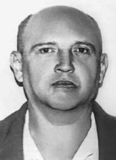

João
Massena
Melo
CIRCUNSTÂNCIAS DA MORTE
João Massena Melo desapareceu em São Paulo no dia 3 de abril de 1974, em companhia de Luiz Ignácio Maranhão Filho e de Walter de Souza Ribeiro, também ligados ao Partido Comunista Brasileiro (PCB). Entretanto, já havia sido preso em 1o de julho de 1970 por agentes da 2ª Auditoria da Marinha, em sua residência, sob a acusação de estar reorganizando o PCB.
Durante o tempo em que esteve preso, foi barbaramente torturado. Naquela ocasião, sua família também foi presa e levada para o presídio da Ilha das Flores, e sua casa foi saqueada. Em fevereiro de 1973, foi libertado do presídio, entretanto, em decorrência das torturas físicas e psicológicas a que foi submetido, sua saúde estava bastante debilitada. Recebeu tratamento médico e cuidados da família, com quem residiu até 19 de março de 1974, quando viajou para São Paulo (SP).
No livro Desaparecidos Políticos consta a informação de que no dia 30 de março, Massena havia escrito uma carta para sua esposa, Ecila, pela qual marcara de encontrá-la entre os dias 5 e 6 de abril. Ela compareceu encontro, mas Massena não apareceu. No dia 20 de abril de 1974, Ecila tomou conhecimento do desaparecimento de Massena, por meio do amigo com quem o militante estava hospedado, que informou que o Massena havia saído de casa às 3h ou 4h da madrugada, “apenas com a roupa do corpo, dizendo que voltaria para o almoço, e não voltou”.
A despeito da vasta busca nos órgãos de repressão política, hospitais, cemitérios, e institutos médico-legais, os familiares de Massena não o encontraram. Foi impetrado um habeas corpus em favor do militante no Supremo Tribunal Militar, protocolado sob o nº 31.242 e relatado pelo ministro Alcides Carneiro. O habeas corpus foi negado sob a alegação de que Massena não estava preso em qualquer instituição militar.
No ano de 1992, em entrevista à revista Veja, o ex-agente da repressão Marival Chaves Dias do Canto afirmou que João Massena foi torturado e morto em um centro de torturas instalado na cidade de Itapevi e que, provavelmente, seu corpo foi jogado no Rio Novo, na cidade de Avaré (SP). No entanto, em depoimento à CNV, de 30 de abril de 2012, Marival afirmou que “foram levados para a Casa da Morte, ainda vivos, além dos acima citados, Ana Rosa Kucinski, Wilson Silva, João Massena Melo e Luiz Ignácio Maranhão Filho […]”.
Marival relata, ainda, em documento elaborado e assinado de próprio punho, intitulado “Desaparecidos do PCB” que: “Foi a operação ‘Radar’ quem localizou, prendeu, em São Paulo, e assassinou, em 1974, os indivíduos João Massena Melo e Luis Inácio Maranhão Filho, integrantes do PCB com atuação em SP. […] João Massena Melo, Luis Inácio Maranhão Filho e Walter de Souza Ribeiro foram presos pelo DOI-CODI II Exército e interrogados em São Paulo. Logo após, foram encaminhados à Casa da Morte, em Petrópolis, onde foram mortos”.
Em depoimento também prestado à CNV, no dia 23 de julho de 2014, o ex-delegado do DEOPS/ES Cláudio Guerra confirmou a informação de que João Massena Melo teria passado pela Casa da Morte de Petrópolis. Guerra afirmou que teria participado da ocultação do cadáver do militante, transportando-o até a cidade de Campos dos Goytacazes (RJ), e, em seguida, incinerando-o na usina Cambahyba.
João Massena Melo disappeared in São Paulo on April 3, 1974, in the company of Luiz Ignácio Maranhão Filho and Walter de Souza Ribeiro, also linked to the Brazilian Communist Party (PCB). However, he had already been arrested on July 1, 1970 by agents from the 2nd Navy Audit, at his residence, on charges of reorganizing the PCB.
During the time he was imprisoned, he was savagely tortured. On that occasion, his family was also arrested and taken to the Flores Island prison, and his house was ransacked. In February 1973, he was released from prison, however, as a result of the physical and psychological torture to which he was subjected, his health was very poor. He received medical treatment and care from his family, with whom he lived until March 19, 1974, when he traveled to São Paulo (SP).
In the book Desaparecidos Políticos there is information that on March 30th, Massena had written a letter to his wife, Ecila, in which he arranged to meet her between April 5th and 6th. She attended the meeting, but Massena did not show up. On April 20, 1974, Ecila learned of Massena's disappearance, through the friend with whom the militant was staying, who reported that Massena had left home at 3 am or 4 am, “with only the clothes on his back, saying he would return for lunch, and he didn't return”.
Despite a vast search in political repression bodies, hospitals, cemeteries, and medical-legal institutes, Massena's family did not find him. A habeas corpus was filed in favor of the activist at the Supreme Military Court, filed under No. 31,242 and reported by Minister Alcides Carneiro. The habeas corpus was denied on the grounds that Massena was not imprisoned in any military institution.
In 1992, in an interview with Veja magazine, former repression agent Marival Chaves Dias do Canto stated that João Massena was tortured and killed in a torture center installed in the city of Itapevi and that his body was probably thrown into the Rio Novo, in the city of Avaré (SP). However, in a statement to the CNV, on April 30, 2012, Marival stated that “in addition to those mentioned above, Ana Rosa Kucinski, Wilson Silva, João Massena Melo and Luiz Ignácio Maranhão Filho were taken to the House of Death, still alive […]”.
Marival also reports, in a document drawn up and signed in his own hand, entitled “Disappeared from the PCB” that: “It was the ‘Radar’ operation that located, arrested, in São Paulo, and murdered, in 1974, the individuals João Massena Melo and Luis Inácio Maranhão Filho, members of the PCB operating in SP. […] João Massena Melo, Luis Inácio Maranhão Filho and Walter de Souza Ribeiro were arrested by DOI-CODI II Army and interrogated in São Paulo. Soon after, they were taken to the House of Death, in Petrópolis, where they were killed.”
In a statement also given to the CNV, on July 23, 2014, former DEOPS/ES delegate Cláudio Guerra confirmed the information that João Massena Melo had passed through the House of Death in Petrópolis. Guerra stated that he had participated in hiding the militant's corpse, transporting it to the city of Campos dos Goytacazes (RJ), and then incinerating it at the Cambahyba plant.
João Massena Melo desapareció en São Paulo el 3 de abril de 1974, en compañía de Luiz Ignácio Maranhão Filho y Walter de Souza Ribeiro, también vinculados al Partido Comunista Brasileño (PCB). Sin embargo, ya había sido detenido el 1 de julio de 1970 por agentes de la 2ª Auditoría de Marina, en su residencia, acusado de reorganización del PCB.
Durante el tiempo que estuvo encarcelado, fue salvajemente torturado. En esa ocasión, su familia también fue arrestada y trasladada al penal de la isla de Flores, y su casa saqueada. En febrero de 1973 salió de prisión, sin embargo, como consecuencia de las torturas físicas y psicológicas a las que fue sometido, su salud era muy delicada. Recibió tratamiento y cuidados médicos de su familia, con quien vivió hasta el 19 de marzo de 1974, cuando viajó a São Paulo (SP).
En el libro Desaparecidos Políticos hay información de que el 30 de marzo Massena le había escrito una carta a su esposa, Ecila, en la que concertaba encontrarse con ella entre el 5 y 6 de abril. Ella asistió a la reunión, pero Massena no se presentó. El 20 de abril de 1974, Ecila se enteró de la desaparición de Massena, a través del amigo con quien se alojaba el militante, quien informó que Massena había salido de su casa a las 3 o 4 de la madrugada, “solo con la ropa que llevaba puesta, diciendo que volvería a almorzar, y no regresó”.
A pesar de una extensa búsqueda en organismos de represión política, hospitales, cementerios e institutos médico-legales, la familia de Massena no lo encontró. A favor del activista se presentó un recurso de hábeas corpus ante el Tribunal Supremo Militar, radicado bajo el N° 31.242 e informado por el ministro Alcides Carneiro. El hábeas corpus fue denegado con el argumento de que Massena no estaba recluido en ninguna institución militar.
En 1992, en una entrevista con la revista Veja, el ex agente represor Marival Chaves Dias do Canto afirmó que João Massena fue torturado y asesinado en un centro de tortura instalado en la ciudad de Itapevi y que su cuerpo probablemente fue arrojado al Río Novo, en la ciudad de Avaré (SP). Sin embargo, en declaración ante la CNV, el 30 de abril de 2012, Marival afirmó que “además de los antes mencionados, Ana Rosa Kucinski, Wilson Silva, João Massena Melo y Luiz Ignácio Maranhão Filho fueron llevados a la Casa de la Muerte, aún con vida […]”.
Marival también relata, en un documento redactado y firmado de su puño y letra, titulado “Desaparecido del PCB” que: “Fue la operación “Radar” que localizó, arrestó y asesinó, en 1974, a los individuos João Massena Melo y Luis Inácio Maranhão Filho, miembros del PCB que operaban en SP. […] João Massena Melo, Luis Inácio Maranhão Filho y Walter de Souza Ribeiro fueron detenidos por Ejército DOI-CODI II e interrogados en São Paulo, poco después fueron llevados a la Casa de la Muerte, en Petrópolis, donde fueron asesinados”.
En declaración también dada a la CNV, el 23 de julio de 2014, el ex delegado del DEOPS/ES, Cláudio Guerra, confirmó la información según la cual João Massena Melo habría pasado por la Casa de la Muerte en Petrópolis. Guerra afirmó que participó en el ocultamiento del cadáver del militante, su transporte a la ciudad de Campos dos Goytacazes (RJ) y su posterior incineración en la planta de Cambahyba.